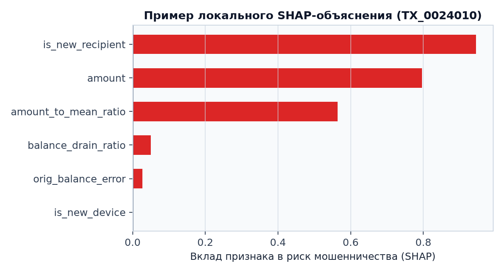

Абляции на Test Set (6 000 tx) и 4-уровневый отклик

4 уровня действий (пороги по стоимости на Val)
- ALLOW < 0.20 · OTP 0.20–0.40 · REVIEW 0.40–0.70 · BLOCK ≥ 0.70 / Rule.
- Поведенческие и графовые признаки подняли LogReg с 0.8135 до 0.9589 и снизили FP-затраты GBDT в 5 раз.
Финансовый итог полного ИИ-агента (Test Set)
- PR-AUC 0.9745 | Precision@100 0.9900 (против 0.5622 у Rules Only).
- Предотвращено 2 806 239 из 2 824 069 (99.31%), затраты FP: 1 543, чистая экономия: 2 804 696 при 13
REVIEW.
SHAP для аналитика, Streamlit-дашборд, PSI и дообучение


SHAP + LLM и Streamlit-дашборд
- Топ-5 факторов SHAP на русском языке (+ опциональное LLM-резюме строго поверх SHAP).
- Дашборд: очередь алертов, разметка, PSI, абляции и ручной симулятор.
Дрейф PSI (CRITICAL) и Feedback Loop
- PSI поймал сдвиг в Test:
dest_in_degree= 2.003,risk_score= 0.741 (схемаnovel_api_cashout). - Разметка (
/feedback) → БД →/retrainдообучает модели с весом свежих меток 3×.
AI Fraud Detection Agent · Управление:
← → Space · Печать в PDF: Ctrl+P